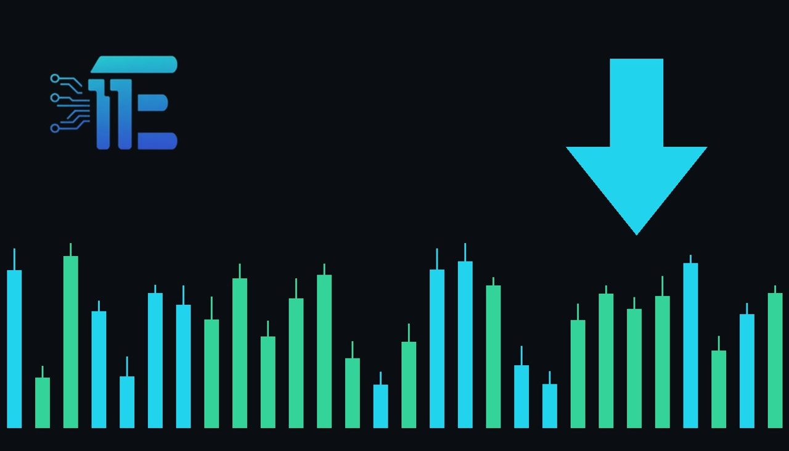

Gold Plunges Nearly 9% on Fed Rate Fearsមាសធ្លាក់ចុះជិត 9% ដោយសារការព្រួយបារម្ភពី Fed
XAU/USD impact: ▼ Bearishផលប៉ះពាល់លើ XAU/USD: ▼ ធ្លាក់

Gold tumbled toward $3,513 per ounce in its sharpest weekly slide since March. Widespread equity liquidation and shifting Federal Reserve policy expectations are exerting heavy downward pressure on XAU/USD.
តម្លៃមាសបានធ្លាក់ចុះជិត 9% ក្នុងសប្តាហ៍ដ៏អាក្រក់បំផុតគិតចាប់តាំងពីខែមីនា ដោយធ្លាក់ដល់ $3,513 ក្នុងមួយអោន។ ការវាយតម្លៃឡើងវិញលើជំហានបន្ទាប់របស់ Fed និងការលក់ចេញភាគហ៊ុន AI កំពុងដាក់សម្ពាធលើ XAU/USD។
Gold experienced a steep selloff, plunging nearly 9% in its worst weekly performance since March and tumbling as low as $3,513 per ounce. The severe decline unfolded as market participants reassessed the Federal Reserve's next policy moves, with shifting rate expectations compounded by a sharp downturn across the artificial intelligence sector.
តម្លៃមាសបានជួបប្រទះការធ្លាក់ចុះយ៉ាងគំហុក ដោយបានធ្លាក់ចុះជិត 9% នៅក្នុងការអនុវត្តប្រចាំសប្តាហ៍ដ៏អាក្រក់បំផុតរបស់ខ្លួនគិតចាប់តាំងពីខែមីនា ហើយបានធ្លាក់ចុះរហូតដល់ $3,513 ក្នុងមួយអោន។ ការធ្លាក់ចុះយ៉ាងខ្លាំងនេះបានកើតឡើងនៅពេលដែលអ្នកចូលរួមក្នុងទីផ្សារបានវាយតម្លៃឡើងវិញនូវជំហានគោលនយោបាយបន្ទាប់របស់ Fed រួមផ្សំជាមួយនឹងការលក់ចេញយ៉ាងខ្លាំងនៅក្នុងវិស័យ AI។
The transmission channel to gold operates primarily through shifting monetary policy expectations and cross-asset liquidity dynamics. When market participants reassess Federal Reserve projections and brace for restrictive monetary conditions, non-yielding assets such as gold typically face headwinds as holding costs remain elevated. Furthermore, when deep losses hit equities—evidenced by the selloff in AI shares—investors and institutions frequently divest liquid holdings like bullion to raise cash or satisfy broader portfolio requirements.
ច្រកបញ្ជូនឥទ្ធិពលមកលើមាសដំណើរការជាចម្បងតាមរយៈការប្រែប្រួលនៃការរំពឹងទុកលើគោលនយោបាយរូបិយវត្ថុ និងសាច់ប្រាក់ងាយស្រួលនៅក្នុងទីផ្សារ។ នៅពេលដែលអ្នកចូលរួមក្នុងទីផ្សារវាយតម្លៃឡើងវិញនូវការព្យាករណ៍របស់ Fed និងត្រៀមខ្លួនសម្រាប់គោលនយោបាយរឹតបន្តឹង ទ្រព្យសកម្មដែលមិនផ្តល់អត្រាការប្រាក់ដូចជាមាសជាធម្មតាប្រឈមនឹងសម្ពាធធ្លាក់ចុះ។ លើសពីនេះ នៅពេលដែលការខាតបង់ធ្ងន់ធ្ងរបានកើតឡើងលើទីផ្សារភាគហ៊ុន ដែលបង្ហាញឱ្យឃើញតាមរយៈការលក់ចេញភាគហ៊ុន AI វិនិយោគិននិងស្ថាប័ននានាតែងតែលក់ទ្រព្យសកម្មដែលមានសាច់ប្រាក់ងាយស្រួលដូចជាមាស ដើម្បីប្រមូលសាច់ប្រាក់ ឬបំពេញតម្រូវការផលប័ត្រទូទៅ។
From an analytical standpoint, if market fears regarding Federal Reserve interest rate actions continue to intensify, downward pressure on gold may persist, particularly if equity weakness triggers further forced selling. On the other hand, if market sentiment stabilizes and anxiety regarding the Federal Reserve's forthcoming steps begins to ease, the sharp discount could attract fresh buying interest, providing vital support for the precious metal following its heavy retreat.
តាមទស្សនវិភាគ ប្រសិនបើការព្រួយបារម្ភរបស់ទីផ្សារទាក់ទងនឹងចំណាត់ការអត្រាការប្រាក់របស់ Fed នៅតែបន្តកើនឡើង សម្ពាធធ្លាក់ចុះលើមាសអាចនឹងបន្តកើតមាន ជាពិសេសប្រសិនបើភាពទន់ខ្សោយនៃទីផ្សារភាគហ៊ុនបង្កឱ្យមានការបង្ខំចិត្តលក់បន្ថែមទៀត។ ផ្ទុយទៅវិញ ប្រសិនបើសតិអារម្មណ៍ទីផ្សារមានស្ថិរភាព ហើយការព្រួយបារម្ភជុំវិញជំហានបន្ទាប់របស់ Fed ចាប់ផ្តើមធូរស្រាល ការធ្លាក់ចុះតម្លៃយ៉ាងខ្លាំងនេះអាចនឹងទាក់ទាញការទិញសារជាថ្មី ដែលផ្តល់ការគាំទ្រដល់លោហៈដ៏មានតម្លៃមួយនេះបន្ទាប់ពីការដកថយយ៉ាងខ្លាំង។
Traders in XAU/USD should closely observe upcoming Federal Reserve signals to clarify the path of monetary policy. Additionally, monitoring volatility across technology and artificial intelligence equities will remain essential, as the stabilization or continuation of the broader stock market selloff can directly impact precious metals sentiment and liquidity flows.
អ្នកជួញដូរ XAU/USD គួរតែតាមដានយ៉ាងដិតដល់នូវសញ្ញាបន្ទាប់ពី Fed ដើម្បីបញ្ជាក់ពីទិសដៅនៃគោលនយោបាយរូបិយវត្ថុ។ លើសពីនេះ ការតាមដានការប្រែប្រួលតម្លៃនៅក្នុងភាគហ៊ុនបច្ចេកវិទ្យានិង AI នឹងនៅតែមានសារៈសំខាន់ខ្លាំង ពីព្រោះស្ថិរភាពឬការបន្តនៃការលក់ចេញនៅក្នុងទីផ្សារភាគហ៊ុនអាចជះឥទ្ធិពលផ្ទាល់ដល់សតិអារម្មណ៍ និងលំហូរសាច់ប្រាក់ងាយស្រួលក្នុងទីផ្សារមាស។
Key takeawaysចំណុចសំខាន់ៗ
- Gold plunged nearly 9% to touch an intraweek low of $3,513 per ounce.
- តម្លៃមាសបានធ្លាក់ចុះជិត 9% ដោយបានធ្លាក់ដល់កម្រិតទាប $3,513 ក្នុងមួយអោន។
- Shifting expectations regarding Federal Reserve policy and an AI equity selloff accelerated losses.
- ការផ្លាស់ប្តូរការរំពឹងទុកលើគោលនយោបាយរបស់ Fed និងការលក់ចេញភាគហ៊ុន AI បានជំរុញឱ្យការខាតបង់កាន់តែខ្លាំង។
- Traders are monitoring upcoming Fed communications and broader stock market sentiment.
- អ្នកជួញដូរកំពុងតាមដានសេចក្តីថ្លែងការណ៍បន្ទាប់របស់ Fed និងសតិអារម្មណ៍ទីផ្សារភាគហ៊ុនទូទៅ។
Original commentary by THE MARKET CODE, based on public reporting from Yahoo! Finance: GC=F News. Written with the help of AI. Educational only, not financial advice.
មតិវិភាគដើមដោយ THE MARKET CODE ផ្អែកលើការរាយការណ៍សាធារណៈពី Yahoo! Finance: GC=F News។ សរសេរដោយមានជំនួយពី AI។ មាតិកាអប់រំប៉ុណ្ណោះ មិនមែនជាដំបូន្មានហិរញ្ញវត្ថុទេ។